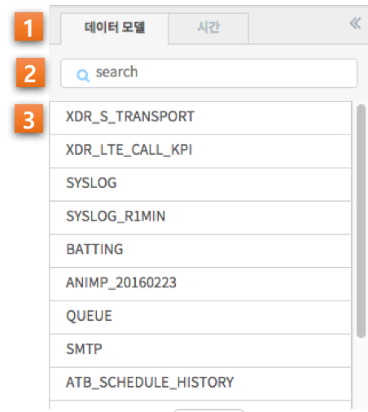

분석 공통 동작¶
| 기능 | 설명 |
| 검색 | 데이터 리소스에 저장된 대량의 데이터 중, 특정 키워드(숫자, 문자, 단어, 문장 등)가 포함된 이벤트를 고속으로 검색하며, 간단한 통계 및 차트를 통해 비정상 상황을 분석할 수 있는 기능을 제공합니다. |
| 피벗 | 분석하고자 하는 데이터를 사용자가 임의대로 정렬하고 필터링 함으로써, 보다 빠르고 쉽게 데이터를 분석할 수 있는 피벗 기능을 제공합니다. |
| 고급 시각화 | 분석하고자 하는 데이터를 분석 유형/차트와 함께 선택하면, 분석 데이터를 적절하게 시각화하기 위한 다양한 기능들을 제공합니다. |
| 이상탐지 | 사용자가 지정한 데이터와 시간 범위 내에서 다양한 옵션과 알고리즘을 통해 이상치를 검출하는 기능을 제공합니다. |
| 데이터 모델 | 분석하고자 하는 데이터를 보다 효율적으로 탐색하기 위해 기존의 데이터를 가상의 모델로 재정의하는 기능을 제공합니다. |
아래 내용은 데이터 브라우저 기능을 사용할 때 각 화면에서 공통적으로 수행해야할 동작 혹은 설정을 기술하고 있습니다.
데이터 모델 선택¶
| 번호 | 구분 | 설명 |
| 1 | 데이터 모델/시간 탭 | 데이터 모델 선택과 시간 범위 설정을 선택하는 탭 컨트롤 |
| 2 | 필터 입력란 | 데이터 모델 목록을 텍스트 입력으로 필터링 |
| 3 | 데이터 모델 목록 | 현재 시스템에 존재하는 데이터 모델 목록을 나열 |
데이터 브라우저 기능을 사용하기 위한 첫 단계는 데이터 모델을 선택하는 것입니다. 데이터 모델에 대한 자세한 내용은 데이터 모델 에서 확인하시기 바랍니다. 검색하고자 하는 데이터 모델을 선택하는 방법은 데이터 모델 목록에서 모델 명을 확인하고 마우스 클릭하는 것입니다. 데이터 모델을 선택하면 해당 항목에는 선택되었다는 하이라이트 효과가 나타나고, 검색 바 좌측 상단에는 선택한 모델 명이 표기됩니다. 원하는 데이터 모델을 찾기 어렵다면, 상단의 필터 입력 에 모델 명을 일부 입력하여 입력한 내용을 포함한 모델 명만이 목록에 표시되게할 수 있습니다.
시간 범위 설정¶
데이터 브라우저 기능을 사용하기 위한 두 번째 단계는 시간을 설정하는 것입니다. Diamond-E 는 수십 TB에서 수 PB에 이르는 대량의 데이터를 분산환경에서 관리하는 시스템입니다. 따라서, 이벤트를 검색할 경우, 검색 기간을 설정하여 불필요한 이벤트 영역의 처리로 인한 속도 저하 및 자원 낭비를 방지할 수 있습니다. 또한, 문제가 발생된 특정 시간의 이벤트만 집중적으로 분석함으로써, 보다 신속하게 문제의 원인을 찾아낼 수 있습니다. 사용자는 아래와 같은 2가지 방법 중 하나로 검색 기간을 설정할 수 있습니다.

| 번호 | 구분 | 설명 |
| 1 | 데이터 모델/시간 탭 | 데이터 모델 선택과 시간 범위 설정을 선택하는 탭 컨트롤 |
| 2 | 설정 방식 아코디언 | 시간 설정 방식 중 하나를 선택하는 아코디언 컨트롤 |
| 3 | 미리 설정(프리셋) | 미리 정의된 시간 설정 중 하나를 선택 |
| 4 | 날짜 및 시간 입력란 | 정해진 포맷으로 날짜 및 시간 텍스트를 직접 입력 |
| 5 | 날짜 선택 캘린더 | 캘린더 UI를 통해 현재 날짜를 확인하고 날짜를 손쉽게 선택 |
| 6 | 시/분/초 드롭다운 | 시간을 시/분/초로 나누어 드롭다운 목록을 통해 선택 |
Option 1: 미리 설정¶
‘미리 설정’에서는 미리 정의된 검색 기간 중 하나를 선택할 수 있습니다. 나열되어 있는 항목들은 모두 상대 시간으로, 설정했을 경우 작업 수행 시마다 현재 시간을 기준으로 한 시간 범위가 검색 기간으로 적용될 것입니다.
| 기간 옵션 | 설명 |
| 전체시간 | 저장된 모든 이벤트를 대상으로 |
| 최근 N분 | 검색 시점으로부터 N분 전 0초 부터 검색 시점까지 |
| 최근 N시간 | 검색 시점으로부터 N시간 전 0분 0초 부터 검색 시점까지 |
| 최근 N일 | 검색 시점으로부터 N일 전 0시 0분 0초 부터 검색 시점까지 |
| 지난 N분 | 검색 시점으로부터 N분 전 0초 부터 검색 시점의 0초 까지 |
| 오늘 | 금일 00:00:00 부터 검색 시점까지 |
| 어제 | 어제 00:00:00 부터 오늘 00:00:00 이전까지 (오늘 00:00:00은 미포함) |
| 이번 주 | 금주 일요일 00:00:00 부터 검색 시점까지 |
| 이전 주 | 이전 주 일요일 00:00:00 부터 금주 일요일 00:00:00 까지 (금주 일요일은 미포함) |
| 이번 달 | 금월 1일 00:00:00 부터 검색 시점까지 |
| 이전 달 | 이전달 1일 00:00:00 부터 금월 1일 00:00:00 까지 (금월 1일은 미포함) |
| 이번 분기 | 이번 분기 1일 00:00:00 부터 검색 시점까지 (분기 시작은 1월, 4월, 7월, 10월) |
| 이전 분기 | 이전 분기 1일 00:00:00 부터 이번 분기 1일 00:00:00 까지 (이번 분기 1일은 미포함) |
| 이번 년도 | 금년 1월 1일 00:00:00 부터 검색 시점까지 |
| 이전 년도 | 작년 1월 1일 00:00:00 부터 금년 1월 1일 00:00:00까지 (금년 1일은 미포함) |
Option 2: 날짜 및 시간 범위 설정¶
‘날짜 및 시간 범위’에서는 년월일에서부터 시분초까지 상세한 일자와 시간을 사용자가 직접 설정할 수 있습니다. 시작 시간과 종료 시간을 나누어 설정하며, 직접 정해진 포맷(예) 2017/07/13 14:08:00)대로 입력하여 설정하거나 캘린더와 드롭다운 목록을 통해 설정할 수도 있습니다. 추가로, 종료시간의 ‘현재 시간’ 체크박스에 체크를 하면 작업 수행시마다 종료시간은 현재 시간으로 적용될 것입니다.
시간 범위 설정을 하면 검색 바 좌측 상단에 설정한 시간 범위가 표기됩니다.